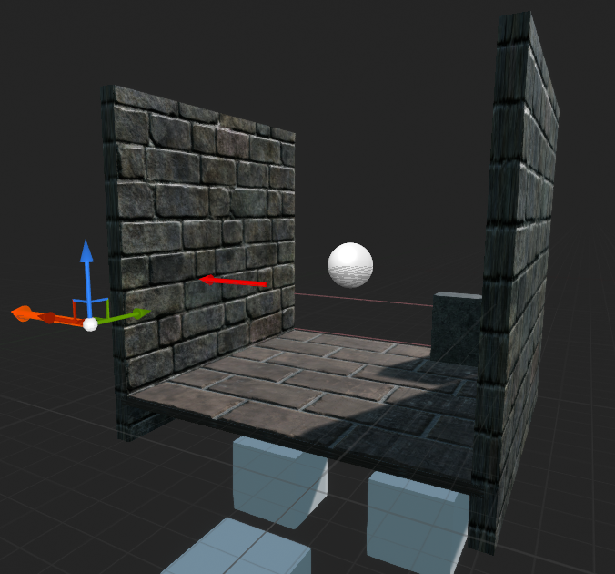

Introduction
Safe navigation in environments with obstacles is fundamental for mobile robots to perform various tasks. Conventional approaches generally search for optimal control to avoid collision based on the geometry or topological mapping of the environment. Environments were perceived as a geometrical world and decisions were only made with preliminary features detected. Robots often follow specific rules and thus it would be hard to adapt to a new environment that would require strenuous effort for different settings. With the advance of machine learning, people begin to adapt machine learning techniques on robotic problems. Additionally, simulation techniques have been improved along with computer hardware upgrades, enabling computers to simulate and render authentic graphics. One of the biggest constraints in robotics is hardware. It can be dangerous if a robot performs a task poorly in real world, causing collision and even more serious consequences. Collision avoidance, in particular, requires the robot to explore and navigate in an environment full of obstacles with collision-free trajectories. As a result, safety is one of the biggest concerns in collision avoidance.Methodology
Algorithm
Deep Q-learning is an good example of DRL. In the context of Q-Learning, a DNN can be used to replace the action-value function. This enables processing of high-dimensional data and thus Q-Learning can be applied on more complex problems. It stabilized the training of action value function approximation with the help of experience replay and target network, which will be discussed below.Experience replay Experience replay refers to the playback of the experiences stored in a replay memory. After each action, an experience in the form of < s,a,r,s′> will be saved, which are current state, action performed, reward and the next state, respectively. The experiences are then used to train the network. One way is to select the replays subsequently. However, it may cause overfitting or lead to local minimum. Instead, drawing minibatches from the replay memory randomly would break the similarity of subsequent training samples and avoid the problems above.
Target network The target network refers to the usage of an extra network to store the action-values. The idea is to separate one network into two, where one used to choose actions and the another one is responsible to store the action-values. In contrast, frequent shift of network values will cause destabilization when using a single network. Therefore, by separating the network and updating the target network slowly, it is found that it stabilized the training process. The update of action-value then becomes Q(s,a) = r + γQ′(s′,argmax(Q(s′,a))) where Q and Q′ represent the two separate networks. It presented an end-to-end reinforcement learning approach, only required minimal domain knowledge, for instance, images or game scores. In addition, the trained network with the same structure and hyperparameters was illustrated to be capable of being applied to many different tasks, which is 49 Atari games, and achieved good results, even comparably to a human professional player.
Network Structure
It takes four consecutive depth images as input, processed by a CNN followed with a dueling DQN. The output of the network are the q-values (or likelihood) of each linear and angular action. The best action is simply the one with highest q-value. The following two extensions were not present in the original DQN. They were adopted after experiments which proved the extensions to be beneficial to the performance of the network.Dueling network Proposed the idea of state-value function V(s) and advantage function A(s,a), namely the dueling network architecture, in contrast to the conventional action-value function Q(s, a). The state-value function V(s) represented how good it is to be in the states and advantage function A(s,a) represented how much better taking a certain action would be compared to the other possible actions. The two functions were combined to estimate Q(s, a), for faster convergence. The corresponding action-value function then becomes Q(s,a) = V(s) +A(s,a)
Dropout To avoid overfitting in training phrase. The key idea was to randomly drop units (along with their connections) from the neural network during training.
Simulation Environment
This project uses Unreal Engine 4 (UE4) to simulate the virtual training environments, a game engine that allows game developers to design and build games, simulations, and visualizations. UnrealCV is an open-source plugin that enables access and modification of the internal data structures of the games. This project uses UnrealCV for communication between UE4 and the reinforcement learning module implemented with Keras, a high-level neural networks API written in Python and capable of running on top of TensorFlow, CNTK, or Theano. Two simulation environments were constructed: Corridor and Generic map.Corridor
Generic map
Randomly built from the four blocks below (begin, left, right, straight)

where yellow circles indicate obstacles (also randomly located), red lines indicate the boundaries and red circle indicates the agent
Learning Overview
The agent interacted with the environment and chose random actions basedon a probability index which decreased from 1 to 0.1 over time. After the agent chose an action, reward was given to the agent and once collision was detected, the episode will restart and the agent will be spawned at next random available location. During training, the agent will store its experience into a buffer andl earn from the buffer at the same time. Intuitively the agent will keep learning by distinguishing actions with high rewards under different circumstances.Experiment and Result
Setup
The agent was spawned at a random available location and no specific tasks or orders were assigned to them. For the map Corridor, the agent can choose among five different angular actions (0◦,±10◦,±20◦) and two different linear actions (move forward or stay). For simplicity,the distance travelled for moving forward was fixed to be 20 units. When collision was detected, the episode will restart and the agent will be spawnedat next random available location. Agent was given images from the previous 3 frames appended with the current frame.For the map Generic map, there will be two networks with either 4 images or 1 image given as input. Hence in total, including Corridor, there would be three different networks.
Reward
Reward refers to the score the agent obtained according to an action in orderto evaluate how well an action is with respect to the current state the agentis in. The reward is defined as R = kvcos4θ where v is the velocity, θ is the angular velocity and k is a constant for reward normalization. Reward for collision is -10.Comparison
Three networks/policies were compared on two different simulation environment.For convenience, PCor refers to the policy trained in Corridor while PGen1 and PGen4 refer to the policy trained in Generic map with 1 image input and 4 images input respectively.| Policy | Tested in | Rewardaverage* | SD* |
|---|---|---|---|
| PCor | Corridor | 9.84 | 0.035 |
| PGen4 | Corridor | 9.78 | 0.083 |
| PGen1 | Corridor | 6.73 | 3.4 |
| PCor | Generic map | 9.25 | 1.47 |
| PGen4 | Generic map | 9.72 | 0.81 |
| PGen1 | Generic map | 6.90 | 2.65 |
The table shows performance comparison for two different networks. Average reward and standard deviation were obtained from 100 episodes, each episode with 500 steps. Maximum average reward is 10.00. The result showed an expected correlation between training and testing environment. Each of the policy was expected to perform better at the environment which it was trained in. However,PCor outperform PGen1 in both environments.